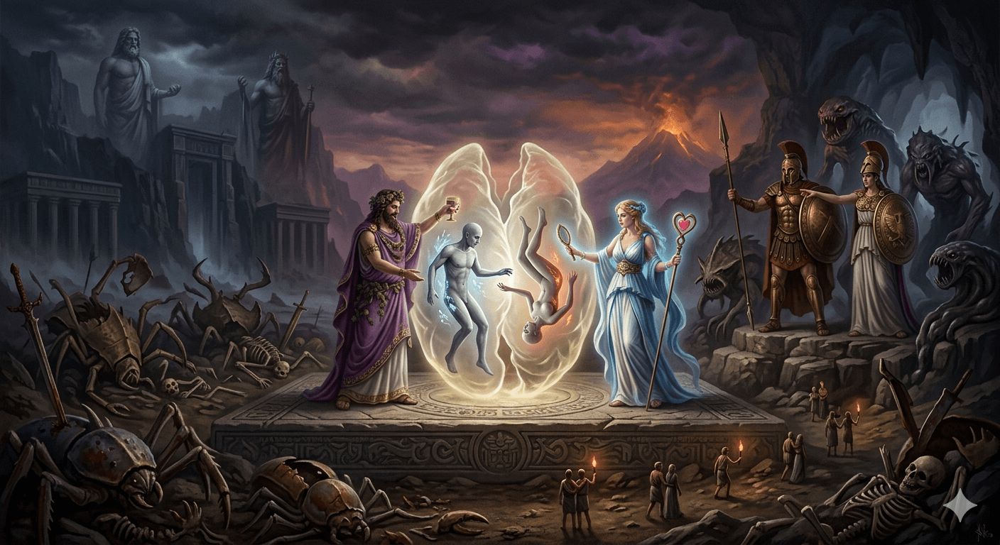
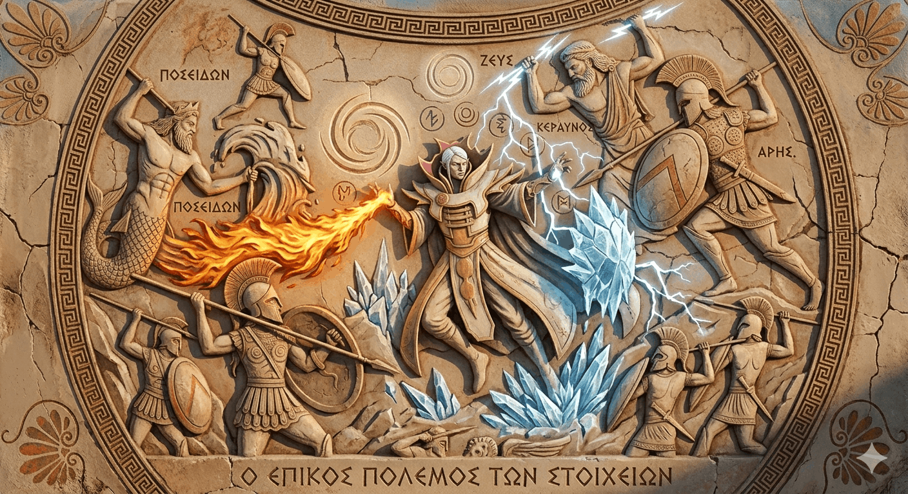

The Underworld
The descent into the silent, fog-shrouded abyss of the Underworld demands a singular tribute – a token forged from the raw spiritual weight and moral architecture of a mortal's existence. This relic disregards the fleeting wealth and earthly status left behind beneath the sun, it measures only substance. When cast upon the frozen stone altar at the banks of the Styx, the ancient, unseen forces of the cosmos flip the coin, declaring a soul’s eternal destiny upon one of its two native faces. If the coin lands on the first face, you are granted standard transit across the river. Your afterlife manifests as a vast, liminal underworld archive, a silent twilight realm where you quietly process your past attachments, deep regrets, and mundane memories. It is a long, meditative period of purification where your previous mortal ego is systematically dissolved. Once your account is fully balanced and your spirit is scrubbed clean of its former self, you drink from the pale waters of the Lethe and are reincarnated back into the living world to begin a new cycle. Conversely, if the coin lands on its inverse face, the stone altar rejects your offering, and the ground shears open beneath your feet. You drop directly into a brutal, hidden corrective labyrinth consisting of nine distinct circles of torment. This descent is triggered exclusively by souls carrying immense psychological weight, unresolved blood-guilt, or severe malice that radically disrupted the sacred equilibrium of the living world. Each tier of this deep subterranean prison operates as a tailored spiritual trial, turning your darkest secrets and most shameful memories into a looping, inescapable nightmare designed to systematically break down your corruption. However, this ancient system still preserves a narrow margin for struggle. To earn the right to rebirth, you cannot remain passive, you must actively outsmart, outlast, and defeat the terrors of all nine levels, fighting your way upward through sheer strategic will and spiritual endurance. If you successfully navigate this terrible gauntlet and breach the surface, you return to the living world as a profound anomaly – born with an inexplicable, ancient wisdom, a fierce instinct for survival, and a lingering, subconscious memory of the dark maze you managed to conquer.

The creation of humans
Humans are no divine creation born of love, they are a malformed weapon that accidentally sparked with consciousness. This cosmic error is the sole reason the Olympian pantheon views humanity with such profound unrest. We are not their children, we are a volatile glitch in their design, an "Anomaly" that refuses to obey its intended parameters. Before the dawn of man, the heavens shook with eternal, bloody warfare. Ares and Athena clashed in endless tactical slaughter, while Poseidon sought to usurp the throne of the cosmos by waging war against Zeus and Hades. To turn the tide of this celestial feud, the Earth-Shaker forged Medusa – a monster of absolute loyalty destined to serve as the Hand of the King, whose very Stone Gaze could calcify the blood and ichor of his enemies. In turn, she raised her own legion of horrors to tear through the armies of the sky. During one massive, catastrophic summoning cycle, a stray fragment of raw biomass was exposed to Medusa’s weaponization process. This flesh absorbed a strange, unintended property – it learned from its wounds. Smaller than the other monsters and pathetically fragile, it was cast aside by the warsmiths and deemed a "Malformation." Yet, when this Malformation was hurled onto the battlefield, it did not strike. Instead, it caught sight of its own reflection pooled in the golden ichor of a fallen deity. For the first time since the cosmos was spoken into existence, a creation looked upon itself and thought: "This slaughter is pointless." Thus, through pure systemic failure, Consciousness was born. The first human refused the oath of war and fled the slaughter. Seeing this weapon abandon its purpose, the surrounding engines of war faltered in confusion, forcing a sudden, uneasy truce between Ares and Athena. Dionysus and Aphrodite, who had long watched the theater of war as a cruel amusement, became obsessed with this wandering creature. They perceived that the Malformation was utterly isolated by its new realization – trapped in a vessel engineered for a butchery it despised. It lived miserable, restless, and incomplete. Dionysus, the master of external yearning, and Aphrodite, the weaver of the internal spirit, swore an oath to fix the broken asset. They flooded the creature's senses with the ecstasy of wine and the weight of beauty, accidentally igniting the volatile fuel of complex human emotions. To guarantee its survival, they engineered a psychological counter-weight. If the original Malformation possessed the "Mind of Disgust" that rejected violence, they forged a companion who held the "Will of Desire" – the primal drive to construct rather than destroy. They did not duplicate the physical blueprint, they inverted the psychological matrix, where the first was Cold as Ice, the second was Burning as Fire. Realizing these two prototypes were mirrors holding opposite halves of the divine Spark, Dionysus and Aphrodite knew the creatures would find no peace apart. Together, however, their lacks canceled each other out. The male prototype provided caution and a steadfast refusal to return to the trenches, the female prototype provided courage and the burning ambition to build a sanctuary where they could hide from the eyes of the gods. When released into the ash of the old battlefield, they did not wage war – they reproduced. Driven by an ancient design to fulfill each other's voids, they were biologically and spiritually bound to pursue one another across eternity.

The Olympians
Oceans and earthquakes are still "controlled" by Poseidon, but Medusa(might be changed) is his
wife
Ares+Athena(married) = War + war = Fury + strategy
Dionysus+Aphrodite = Joy/Ease + Beauty/Love = true love

Hero vs olympian gods
Kael'Thas, known to the archives as The Invoker, was the prophesied sovereign, destined to inherit the earthly realm when Zeus inevitably succumbed to the madness of absolute power. Even in infancy, his magical talent was terrifying. At the age of two, he commanded the absolute zero of ice. At four, the consuming rage of fire. By his seventh year, the jagged wrath of lightning. He ruled the natural order, summoning catastrophic tornadoes, calling meteors from the vault of heaven, raising walls of frost, brewing oceanic tempests, invoking the blinding fury of a sunstrike, and manifesting elemental reflections of his own form to wage war in his stead. The Invoker wed and bore a daughter, Apollinaria. Coveting her purity, Hades ambushed the child and dragged her down into the subterranean dark to force her into a grim marriage, echoing his ancient theft of Persephone. Driven mad by the shattering of his bloodline, the Invoker swore an unyielding oath to reclaim her, regardless of the cosmic cost. He cast his elemental replicas to the four corners of the Earth, yet found no footprint of her abduction. In his desperation, the Invoker breached the forbidden thresholds of dark sorcery, attaining an unnatural immortality. For centuries, he dissected the very mechanics of Chronos. Through his forbidden arts, he learned to warp the temporal current, casting his consciousness backward through the tides of time to unearth the truth. He witnessed Hades dragging his daughter through the shadow-gates and immediately marched upon the gates of the Underworld to bring the Lord of the Dead to account. Imagine the fury of Zeus, King of the Gods, when he received a covert whisper from an anonymous deity warning him that a mortal wielding forbidden magic was trespassing within the realm of the dead. It is a foundational law of the cosmos that no mortal may cross into the kingdom of shades without forfeiting their life, and this transgression threw the King of Olympus into a divine rage. He descended into the abyss to execute judgment upon the intruder. Deep within the cavernous halls of the dead, the Invoker confronted Hades, demanding the restoration of his daughter. Hades refused with cold arrogance, declaring that she belonged to the dark and that no creature of dust could dictate terms to an immortal. Armed with his mastery over fire, ice, and lightning, the Invoker threatened the god, and their titanic clash threatened to collapse the very foundations of the Underworld. Zeus arrived at the apex of the cataclysm, sundering the conflict and demanding an accounting from both warrior and god. Ultimately, the King of Olympus sided with the architecture of the old laws, ruling that the mortal was guilty of cosmic treason, and banished the Invoker back to the surface of the Earth. Furious at Zeus’s unjust decree, the Invoker swore a blood-oath against the heavens, launching an insurgency against the entire Olympian pantheon to reclaim his child. For years without end, the mortal waged war against the divine. It was a bloody, relentless struggle that shook the pillars of creation, a war that felt as though it would never reach its conclusion. Finally, the King of the Gods chose to halt the warfare – not out of victory or defeat, but because he looked upon the unending devastation and realized the absolute pointlessness of the eternal battle. He offered a truce on strict conditions: the Invoker would have his daughter restored to him, but the age of divine supremacy would end. The gods would withdraw their influence from the wider world, stripping away their dominion over mankind. Only one sacred land remained bound to the heavens. Greece will forever remain under the watchful care of the gods, preserved eternally as the place where it all began, and the ancient Motherland of the Gods.